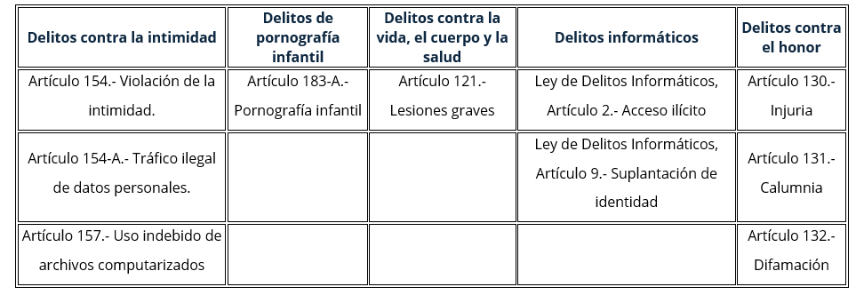
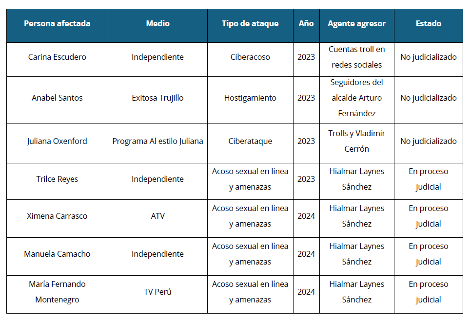

Resumen
Este estudio analiza el tratamiento judicial de la violencia de género en línea y su impacto en los derechos sexuales de las mujeres en Perú, con énfasis en casos documentados de periodistas peruanas. Se emplea una metodología cualitativa basada en el análisis de investigaciones periodísticas, el marco normativo vigente y casos judicializados.
Los resultados evidencian que el sistema judicial peruano presenta deficiencias en la protección de los derechos sexuales de las víctimas debido a la falta de un marco normativo específico y a una respuesta fragmentada ante esta violencia digital. Asimismo, las decisiones judiciales tienden a revictimizar a las denunciantes y no responden adecuadamente a los estándares internacionales en materia de derechos humanos y género.
Se concluye que la violencia de género en línea constituye una amenaza grave para la libertad de expresión y los derechos sexuales de las mujeres, especialmente aquellas en el ámbito periodístico. Se recomienda fortalecer la legislación, capacitar a operadores de justicia y adoptar medidas de protección eficaces para garantizar una respuesta integral que prevenga la revictimización y garantice el acceso a la justicia.
Palabras clave: Violencia de género digital, derechos sexuales y reproductivos, libertad de expresión, revictimización, impunidad, acceso a la justicia, estándares internacionales.
Introducción
En el Perú, durante el año 2023 el Ministerio de la Mujer y Poblaciones Vulnerables reportó 71 casos atendidos por los Centros de Emergencia Mujer a nivel nacional. De los 71 casos 70 son mujeres y el 77,5% de los casos de mujeres que han sufrido de violencia tienen entre 18 y 59 años. El 57,7% de los casos la presunta persona agresora tiene un vínculo sentimental de pareja con la víctima. El 60,6% de los casos manifiesta que el tipo de violencia ejercida en su contra fue psicológica y el 36,6% violencia sexual. Para este año 2024, el Ministerio de la Mujer y Poblaciones Vulnerables (MIMP) ha brindado más de 67,000 atenciones a través de los Centros de Emergencia Mujer (CEM). Estas atenciones se centraron en casos de violencia contra las mujeres y los integrantes del grupo familiar, destacándose la violencia psicológica y física como los tipos más comunes. (Portal Estadístico Aurora, 2023)
Desde el ámbito internacional, la violencia de género en línea es reconocida como una forma de violencia contra las mujeres que está en aumento. Entre las manifestaciones más frecuentes se incluyen la desinformación y difamación (67%), el ciberacoso (66%), la incitación al odio (65%), la suplantación de identidad (63%) y el acoso (63%), el abuso mediante videos e imágenes (57%), las amenazas violentas (52%) y el envío no deseado de contenido sexual explícito (43%).(Centro Regional de Formación de las Naciones Unidas, 2023)
No obstante, para fines de esta investigación debemos hacer especial énfasis en la violencia de género en línea como una problemática que afecta, de manera particular, a mujeres en la esfera pública, como las periodistas. Este tipo de violencia se manifiesta a través del uso de tecnologías de la información para acosarlas, humillarlas o difundir contenido sexual no consentido. Al respecto, la respuesta del sistema judicial ha sido insuficiente y fragmentada, presentando carencias en la protección efectiva de las víctimas. Esto se debe, en gran medida, a la falta de un marco normativo adecuado que aborde la velocidad y el anonimato con que se perpetra esta violencia en las plataformas digitales. El análisis de estos casos resulta fundamental para evidenciar cómo las lagunas en la regulación de estas plataformas y la ausencia de mecanismos judiciales eficaces agravan la vulneración de los derechos sexuales de las mujeres.
Marco Conceptual
Violencia de Género en Línea y Derechos Sexuales de las Mujeres
Para esta investigación se hará referencia a la "violencia de género en línea" o “violencia de género digital” de forma indistinta. Pues si bien existe distintas formas de denominarla ello nos permite analizar y relacionar los conceptos que engloban este tipo de violencia y facilitan la identificación de los actos que vulneran a las víctimas principalmente en el entorno digital. También, se toma en cuenta el desarrollo conceptual realizado por el MESECVI y otros organismos del Sistema Interamericano que proporcionan a los Estados miembros de la OEA herramientas y marcos normativos para la creación de políticas públicas en esta materia. Asimismo, el informe de 2018 de la Relatora Especial sobre Violencia contra la Mujer, que denomina específicamente la problemática como "violencia en línea contra la mujer", subraya las complejidades surgidas de este tipo de violencia, si intentar ser un simple catálogo de definiciones. En materia de obligaciones internacionales tomaremos en cuenta el Informe sobre Ciberviolencia y Ciberacoso contra las Mujeres y Niñas, elaborado por ONU Mujeres y el MESECVI, que aborda la problemática de manera integral y resalta los derechos y obligaciones de los Estados a partir de la Convención Belem Do Pará. (Consejo de Derechos Humanos, 2018)
La violencia de género en línea o digital se refiere a aquellos actos que se cometen, instigan o se agravan a través del uso de tecnologías de la información y las comunicaciones (TIC), incluyendo teléfonos móviles, internet, redes sociales y correo electrónico. Estos actos están motivados por razones de género y tienen como objetivo causar daño físico, sexual, psicológico o económico a las personas afectadas, especialmente a mujeres y niñas.(Mecanismo de Seguimiento de la Convención Belem Do Pará, 2022). Entre los tipos de violencia de género en línea se encuentra la difusión no consentida de contenido íntimo, que consiste en la creación, distribución o intercambio digital de imágenes, videos o audios de naturaleza sexual sin la autorización de la persona involucrada, lo cual afecta profundamente su dignidad y privacidad. Otro tipo es el acceso no autorizado a datos personales, en el cual se obtiene, controla o manipula información privada de una persona sin su consentimiento, con la intención de perjudicarla o controlar aspectos de su vida. La suplantación de identidad también es común, y se refiere a la acción de hacerse pasar por alguien en internet para causar daño o manipular las relaciones y la reputación de la persona afectada. Además, está la difamación o desprestigio, que se realiza mediante la difusión de información falsa o manipulada, afectando la reputación y credibilidad de la persona en entornos sociales y profesionales. (Espinoza, 2024)
El ciberhostigamiento y el ciberacoso son otro tipo de violencia de género digital e implican intimidación a través de mensajes repetitivos con contenido insultante o amenazante, con el objetivo de amedrentar o debilitar emocionalmente a la víctima. También, incluyen amenazas directas de daño, en las cuales el agresor expresa intenciones explícitas de causar daño físico o emocional, lo que genera temor en la persona afectada. Por otro lado, existe la violencia física facilitada por la tecnología, que ocurre cuando se usan dispositivos tecnológicos para facilitar el daño físico directo. Otros tipos de violencia incluyen la explotación o trata mediante TIC, donde plataformas digitales se emplean para el tráfico y abuso de mujeres y niñas, así como los ataques a grupos o comunidades de mujeres organizadas, dirigidos a desestabilizar y perjudicar colectivamente a estos grupos(Mecanismo de Seguimiento de la Convención Belem Do Pará, 2022).
Efectos específicos sobre los derechos de las mujeres afectadas
Se debe resaltar que la violencia de género digital o en línea tiene un impacto en los derechos humanos y sexuales de las mujeres. Dado que se vulneran de forma directa derechos como el derecho a la integridad personal, que abarca tanto aspectos físicos, psíquicos como morales. Esta violencia también compromete el derecho a la privacidad, dado que implica la difusión y uso no autorizado de imágenes de las víctimas. El derecho a la protección de los datos personales también se vulnera ya que las identidades de las víctimas son tomadas sin su consentimiento. Asimismo, el derecho al honor y la reputación de las afectadas se ve comprometido al construirse narrativas falsas que atentan contra su imagen pública y personal. Si bien un espectro del ejercicio de los derechos sexuales incluyen la capacidad de tomar decisiones informadas sobre la sexualidad, así como, el derecho a una salud sexual y a una educación sexual integral. También, implica la autonomía sexual y la libertad de las mujeres para decidir cómo, cuándo y de qué forma expresan su sexualidad sin coacción o violencia en espacios digitales tanto como si eligen no hacerlo. Es decir, la violencia de género en línea transgrede los derechos sexuales de las víctimas, exponiéndolas sin su consentimiento (Naciones Unidas, 2020).
Por otra parte, el Programa de Ciberseguridad del Comité Interamericano contra el Terrorismo (CICTE), la Comisión Interamericana de Mujeres (CIM) y la Organización de los Estados Americanos (OEA), ha desarrollado de forma extensa y detallada la problemática de la violencia de género en línea como una cuestión de género. Pues, cuando se comenten estos actos lo que se refuerza son los roles de género socialmente establecidos para hombres como mujeres. En esa línea, no se trata de un tipo de violencia que suceda solo en el mundo online sino que es evidencia de la violencia que se ejerce contra las mujeres en el mundo real (ONU Mujeres, 2022). Remarcando que se trata de un “continuum” de violencia, es decir en el escenario social discriminatorio existente, donde las desigualdades de género y el sistema de dominación, trasciende gracias a la gran variedad de herramientas y plataformas tecnológicas que permiten perpetuar el maltrato en contra de las mujeres y otros grupos vulnerables. Si bien en el presente artículo hacemos referencia solo a la violencia de género en línea o digital que se comete contra las mujeres, el término trabajado por ONU Mujeres y el Mecanismo de Seguimiento de la Convención menciona la “violencia de género en línea” y hace referencia a todos los grupos vulnerables que pueden ser victimas de este tipo de violencia como la comunidad LGTBQ(ONU Mujeres, 2022).
Marco Normativo y Desafíos Judiciales en Perú
El Plan Nacional Contra la Violencia de Género 2016-2021 reconoce el uso de las tecnologías de la información como un medio para ejercer violencia contra grupos vulnerables. Asimismo, la Ley N.º 30364 para Prevenir, Sancionar y Erradicar la Violencia contra las Mujeres y los Integrantes del Grupo Familiar y su reglamento (Decreto Supremo N.º 009-2016-MIMP) señalan en el artículo 8 la “violencia a través de las tecnologías de la información y comunicación” como una modalidad específica de violencia. En el ámbito penal, el Decreto Legislativo N.º 1410, promulgado en septiembre de 2018, modificó el Código Penal para abordar la violencia de género en línea, introduciendo los artículos 151-A (Acoso), 154-B (Difusión de imágenes, materiales audiovisuales o audios con contenido sexual), 176-B (Acoso sexual) y 176-C (Chantaje sexual). Además, la Ley N.º 30096, Ley de Delitos Informáticos, tipifica en su artículo 5 el delito de proposiciones con fines sexuales a niños, niñas y adolescentes por medios tecnológicos (conocido como grooming).Estas disposiciones se integran en la Ley N.º 30077, Ley contra el Crimen Organizado, que establece las normas para investigar y sancionar delitos cometidos por organizaciones criminales. Para ello, habilita el uso de técnicas especiales de investigación, como la intervención de comunicaciones (art. 10, en concordancia con el art. 230 del Código Procesal Penal) y el empleo de agentes encubiertos (art. 13, en concordancia con el art. 341 del Código Procesal Penal).Existen otros tipos penales que, bajo ciertos escenarios, también podrían considerarse útiles para denunciar violencia de género en línea:

Muchos de estos tipos penales están pensados en la protección de los derechos sexuales de las mujeres, reconociendo que la violencia de género, en sus distintas formas, atenta directamente contra su integridad y dignidad. Si bien este abordaje desde el ámbito penal no incluye un tipo penal específico para la violencia de género en línea como tal, permite un enfoque de la problemática en el Perú que no se limita únicamente a este fuero, sino que se extiende también al civil y administrativo. En algunas circunstancias, no solo es necesario que el Estado actúe para proteger a las mujeres desde el ámbito penal, sino que se espera un actuar integral, amplio y preventivo. Desde el ámbito internacional, ha quedado claro que todas las formas de violencia contra las mujeres, incluida su dimensión digital, deben entenderse en el marco de la discriminación por razón de género. Con base en el artículo 5 de la Convención sobre la Eliminación de Todas las Formas de Discriminación contra la Mujer (CEDAW) e instrumentos regionales aplicables, los Estados tienen la obligación, incluido el Perú, de combatir estas formas de discriminación para eliminar las causas que facilitan y permiten la violencia digital contra las mujeres (Oficina del Alto Comisionado de las Naciones Unidas para los Derechos Humanos [ACNUDH], 2022).
Este abordaje es fundamental para la protección de los derechos sexuales de las mujeres, ya que estas obligaciones no pueden contener solo una respuesta que considere únicamente el ámbito penal. Dado que, podría no captar la totalidad de la problemática de la violencia de género digital y sus efectos perjudiciales sobre la autonomía sexual y la seguridad en línea de las mujeres. Por el contrario, un enfoque integral permite que además de la sanción penal, se brinden vías de reparación en los fueros civil y administrativo, ofreciendo una mayor respuesta estatal que busquen prevenir la violencia y proteger los derechos humanos de las mujeres. La violencia en línea debe entenderse como una extensión de la violencia de género que, desde una perspectiva amplia y estructural, afecta a las mujeres en todos los aspectos de su vida, vulnerando sus derechos sexuales en algunos casos y su libertad de participación en el espacio público sin temor a represalias(Centro Regional de Formación de las Naciones Unidas, 2023).
Ello en concordancia con los estándares jurídicos internacionales cuyo objetivo es garantizar, proteger y respetar los derechos humanos, particularmente los derechos de las mujeres. Puesto que estos estándares se encuentran en las recomendaciones del Comité CEDAW, la jurisprudencia de la Corte Interamericana de Derechos Humanos y las decisiones de Cortes Constitucionales de otros países. Para los operadores de justicia, aplicar estos estándares aporta fundamentos técnicos que fortalecen sus decisiones, siempre que los adapten al contexto específico de cada caso. No basta con citar los estándares; es esencial relacionarlos con los hechos particulares para comprender su impacto en la protección de los derechos de las mujeres. El Comité CEDAW ha enfatizado que los jueces deben usar estos estándares considerando el contexto de las demandas y necesidades de las mujeres. Los estándares establecen tres deberes clave para los Estados en casos de violencia de género: 1) investigar los hechos con diligencia, seriedad y exhaustividad; 2) llevar a cabo investigaciones imparciales y sin discriminación; y 3) respetar los derechos de las víctimas, evitando su revictimización(ONU Mujeres, 2020).
Estudio de Casos Documentados y Decisiones Judiciales
A continuación, se presenta un esquema con un grupo de casos registrados entre el año 2023 y 2024 en el que periodistas de diversos medios de comunicación han sido víctimas de algún tipo de violencia de género en línea. Varios de estos casos han sido documentados por la Asociación Nacional de Periodistas del Perú (ANP) y los casos que han sido judicializados han sido reportados por otros medios de comunicación e incluso por las mismas periodistas agraviadas.
Marco Normativo y Desafíos Judiciales en Perú
El Plan Nacional Contra la Violencia de Género 2016-2021 reconoce el uso de las tecnologías de la información como un medio para ejercer violencia contra grupos vulnerables. Asimismo, la Ley N.º 30364 para Prevenir, Sancionar y Erradicar la Violencia contra las Mujeres y los Integrantes del Grupo Familiar y su reglamento (Decreto Supremo N.º 009-2016-MIMP) señalan en el artículo 8 la “violencia a través de las tecnologías de la información y comunicación” como una modalidad específica de violencia. En el ámbito penal, el Decreto Legislativo N.º 1410, promulgado en septiembre de 2018, modificó el Código Penal para abordar la violencia de género en línea, introduciendo los artículos 151-A (Acoso), 154-B (Difusión de imágenes, materiales audiovisuales o audios con contenido sexual), 176-B (Acoso sexual) y 176-C (Chantaje sexual). Además, la Ley N.º 30096, Ley de Delitos Informáticos, tipifica en su artículo 5 el delito de proposiciones con fines sexuales a niños, niñas y adolescentes por medios tecnológicos (conocido como grooming).Estas disposiciones se integran en la Ley N.º 30077, Ley contra el Crimen Organizado, que establece las normas para investigar y sancionar delitos cometidos por organizaciones criminales. Para ello, habilita el uso de técnicas especiales de investigación, como la intervención de comunicaciones (art. 10, en concordancia con el art. 230 del Código Procesal Penal) y el empleo de agentes encubiertos (art. 13, en concordancia con el art. 341 del Código Procesal Penal).Existen otros tipos penales que, bajo ciertos escenarios, también podrían considerarse útiles para denunciar violencia de género en línea:

A partir de esta casuística, se llevará a cabo el análisis relativo al abordaje del sistema judicial, prestando cómo estas han afectado los derechos sexuales de las víctimas. En primer lugar, las víctimas de violencia de género en línea de estos casos son mujeres con voz pública por su condición de periodistas y comunicadores. Es decir, cumplen un rol en el ámbito público como agentes transmisores de información y algunos casos también tienen una voz política. También han llegado a compartir en sus plataformas digitales su posición política y social respecto a algunos temas. Segundo, todos los ataques están dirigidos a una finalidad concreta respecto a su libertad de expresión. Esto implica generar en ellas un efecto de autocensura, que limiten su participación en las redes sociales así como su participación activa en algunos espacios políticos y sociales. En algunos casos se trata de ataque sistemáticos y estructurados. Mientras que, en otros casos los agresores no tienen ningún reparo en mostrar su identidad. Tercero, respecto a los casos judicializados nos encontramos ante ataques de connotación sexual explícita donde se utilizan la amenaza de violación como una acción disciplinadora(Centro Regional de Formación de las Naciones Unidas, 2023).
Por lo que, este modus operandi en el que se utiliza la amenaza de violación tiene un impacto profundo y desestabilizador en los derechos sexuales de las periodistas, afectando su libertad y autonomía sexual en muchos casos. Pues estos ataques buscan ejercer una forma de control y castigo sobre el libre ejercicio de sus derechos sexuales, se les cosifica y denigra en función a su sexo. Ello sin olvidar que estas amenazas afectan la salud mental y emocional de las periodistas ya que generan un ambiente de constante vigilancia y hostilidad que les impide actuar con plena libertad en sus vidas personales y laborales. Además, esta forma de violencia tiene un efecto multiplicador, pues, al exponer a las periodistas a la posibilidad de una agresión sexual, las empuja a autocensurarse y limita su participación en espacios de debate público. Adicionalmente, existen un afán de subordinación y no solo de disciplinarlas por alzar la voz y desafiar normas patriarcales. Contribuyendo a perpetuar un sistema en el que las mujeres son intimidadas para mantenerse al margen de ciertos temas o posiciones en la esfera pública (ONU Mujeres, 2022).
El rol garante de los operadores judiciales para asegurar el acceso a la justicia de las víctimas
Respecto a los operadores de justicia como actores relevantes en al abordaje de casos de violencia de género en línea, debemos tener en cuenta que las juezas y jueces deben mantener la relación entre el deber de imparcialidad y la perspectiva de género. Dado que lo que se exige es que estos se despojen de sesgos personales a través de un trabajo consciente y logren tomar decisiones objetivas que tengan la finalidad de conocer la verdad, respetar, proteger y garantizar los derechos de las personas. Por lo que, utilizar la perspectiva de género aporta a la transformación de los patrones culturales que provocan desigualdad, discriminación y violencia en procesos judiciales (ONU Mujeres, 2020).
Las decisiones judiciales deben tomarse en el marco de esta perspectiva y debe aplicarse en todas las etapas de los procesos judiciales en los casos de violencia contra la mujer o en delitos específicos de género. En este sentido, es esencial adoptar un enfoque transversal de género, que permita considerar las estructuras desiguales e injustas para restaurar y proteger los derechos vulnerados. Incorporar esta perspectiva de género en el sistema judicial no solo aporta a la reparación individual de los derechos, sino que también tiene un efecto transformador en la sociedad y contribuye al fortalecimiento de una justicia más equitativa. Además, esto facilita que operadores de justicia como jueces y fiscales reconozcan otras necesidades de protección específicas de las personas, tales como la edad, el origen étnico, la situación migratoria y económica, las identidades sexuales, la condición de discapacidad o embarazo, entre otras. Esta comprensión es esencial para solicitar y otorgar correctamente medidas de protección, pensiones alimenticias, medidas de reparación integral, y sobre todo para identificar circunstancias que agraven o atenúen la infracción o los actos delictivos. Por lo que, puede tener especial énfasis el análisis del contexto para ayudar a evaluar el riesgo en casos de violencia de género(ONU Mujeres, 2020).
Por tanto, respecto a los cuatro casos que han sido judicializados se observa una grave omisión de este enfoque en la evaluación judicial. Si bien los casos no se encuentran en la misma etapa judicial tienen en común que han abierto el camino para la judicialización de la problemática de la violencia de género en línea o digital. Sin embargo, el desconocimiento por parte de jueces y fiscales sobre este tipo de violencia ha originado que no se tenga en cuenta el contexto de acoso prolongado. Tampoco se ha valorado de forma adecuada el riesgo que este representaba para las víctimas y varias oportunidades se subestimó la peligrosidad del agresor. Las medidas de protección dictadas no respondían a la naturaleza específica de los actos que engloban la violencia de género en línea. Como se evidenció a raíz de uno de los casos documentados, la jueza encargada del caso no pudo comprender que estas agresiones puedan traspasar la virtualidad y que acarreen consecuencias concretas. En esa línea, la jueza tampoco tomó en cuenta que la violencia de género en línea, puede generar restricciones graves a la libre movilidad de las agraviadas y a su salud emocional. Además, existe una falta de análisis contextual y de un enfoque de género en este proceso judicial que refleja una insuficiente comprensión de este tipo de violencia en específico y de los riesgos asociados (Infobae, 2024).
Por otra parte, los fiscales quienes dirigen la investigación penal en el Perú, en los casos reportados en sus disposiciones fiscales deben responder no solo a un criterio de idoneidad y legalidad en el marco del debido proceso. Sino también un enfoque de protección de derechos humanos centrado en evitar la revictimización de las agraviadas. Las disposiciones que se suelen solicitar para formalizar la investigación deben evitar generar situaciones de revictimización así como afectaciones psicológicas(Disposición N.º 606068900-2024)
Finalmente, una correcta incorporación de la perspectiva de género en este tipo de casos tiene el potencial de no solo asegurar una reparación individual para las víctimas, sino también de enviar un mensaje claro sobre la importancia de combatir la violencia digital contra mujeres en la sociedad peruana. Esto podría fomentar una cultura de rechazo hacia estas conductas y contribuir al fortalecimiento de un sistema de justicia más inclusivo y protector.
Conclusión
Las mujeres periodistas y comunicadoras que experimentan violencia de género en línea son atacadas con la intención de limitar su libertad de expresión, generando autocensura y restringiendo su participación en redes sociales, así como en espacios políticos y sociales. Estos ataques, en muchos casos sistemáticos y de connotación sexual explícita, buscan ejercer un control y cosificación sobre ellas, afectando su libertad y autonomía sexual. Además, generan un entorno de hostilidad que influye negativamente en su salud mental, creando una barrera que les impide desenvolverse con libertad en sus vidas personales y profesionales. Lo que finalmente desencadena que salgan de la esfera pública o desistan de mantenerse en ella.
Respecto a los operadores judiciales, juezas y jueces, queda claro que estos juegan un papel fundamental en el acceso a la justicia para las víctimas de violencia de género en línea. Sin embargo, para asegurar decisiones justas y equitativas, es esencial que aborden estos casos con una perspectiva de género y se despojen de sesgos personales. Esta perspectiva debe aplicarse de manera transversal en todas las etapas judiciales, considerando no solo el género, sino otros factores como edad, origen étnico, situación económica y migratoria, condición de discapacidad o embarazo, entre otros. Este enfoque permitiría a los operadores de justicia evaluar adecuadamente los riesgos y proporcionar medidas de protección y reparación más efectivas, adaptadas a las necesidades de las víctimas y el tipo específico de violencia.
En los casos revisados, existe una falta perspectiva de género y análisis contextual en la respuesta judicial. Esta no solo fue insuficiente, sino que no consideró la naturaleza de esta violencia, sus implicancias en la vida real y las restricciones que generan para la libre movilidad y bienestar emocional de las víctimas. La omisión de estos elementos refleja una comprensión limitada de la dinámica que se utiliza en esta forma de violencia para perpetrarse y de sus consecuencias.
Incorporar un enfoque de género en estos casos no solo favorece una reparación justa y personalizada para las víctimas, sino que también tiene un impacto transformador en la sociedad. La correcta aplicación de este enfoque en el sistema de justicia envía un mensaje de rechazo hacia la violencia digital contra mujeres, contribuyendo al fortalecimiento de un sistema judicial más inclusivo y comprometido con la erradicación de prácticas de violencia y discriminación, fomentando una cultura de respeto y protección hacia los derechos de las mujeres.
Bibliografía
Asociación Nacional de Periodistas del Perú. (2023). Informe OFIP 2023. https://anp.org.pe/wp-content/uploads/2024/01/Informe-OFIP-2023.pdf
Centro Regional de Formación de las Naciones Unidas. (2023). Violencia de género facilitada por la tecnología. Naciones Unidas. https://unric.org/es/violencia-de-genero-facilitada-por-la-tecnologia/
Consejo de Derechos Humanos. (2018). Informe de la Relatora Especial sobre la violencia contra la mujer, sus causas y consecuencias acerca de la violencia en línea contra las mujeres y las niñas desde la perspectiva de los derechos humanos (A/HRC/38/47). Naciones Unidas. Recuperado de: https://undocs.org/es/A/HRC/38/47
Espinoza, E. (2024). Taller: “Herramientas para identificar la violencia de género en línea” [Presentación de Canva]. Canva. Recuperado de: https://www.canva.com/design/DAF8_Jr2kHE/I49Jw8R_jaElMK2pd3P8nw/edit?utm_content=DAF8_Jr2kHE&utm_campaign=designshare&utm_medium=link2&utm_source=sharebutton
Fiscalía de la Nación. (2024). Disposición N.º606068900-2023-605: Disposición de Inicio Diligencias Preliminares.
Infobae. (2024, 15 de agosto). Programan audiencia para evaluar prisión efectiva contra acosador de periodistas a una semana de que fuera liberado. Infobae. https://www.infobae.com/peru/2024/08/15/programan-audiencia-para-evaluar-prision-efectiva-contra-acosador-de-periodistas-a-una-semana-de-que-fuera-liberado/
Mecanismo de Seguimiento de la Convención Belem Do Pará. (2020). La violencia de género en línea contra las mujeres y niñas: Guía de conceptos básicos. Recuperado de: https://www.oas.org/es/sms/cicte/docs/Manual-La-violencia-de-genero-en-linea-contra-las-mujeres-y-ninas.pdf
Mecanismo de Seguimiento de la Convención Belem Do Pará. (2022) Informe ciberviolencia y ciberacoso contra las mujeres y niñas en el marco de la Convención Belem Do Para. Recuperado de: https://lac.unwomen.org/es/digital-library/publications/2022/04/ciberviolencia-y-ciberacoso-contra-las-mujeres-y-ninas-en-el-marco-de-la-convencion-belem-do-para#view
Naciones Unidas. (2020). Derechos sexuales y reproductivos. Recuperado de: https://hchr.org.mx/historias-destacadas/derechos-sexuales-y-reproductivos-2/
Oficina del Alto Comisionado de las Naciones Unidas para los Derechos Humanos. (2022). La dimensión digital de la violencia contra las mujeres y las niñas (Plataforma EDVAW, Documento temático). ACNUDH. https://www.ohchr.org/sites/default/files/documents/hrbodies/cedaw/statements/2022-12-02/EDVAW-Platform-thematic-paper-on-the-digital-dimension-of-VAW_Spanish.pdf
Portal Estadístico Aurora. (2023). Formas de la violencia 2023. Ministerio de la Mujer y Poblaciones Vulnerables del Perú. https://portalestadistico.aurora.gob.pe/formas-de-la-violencia-2023/